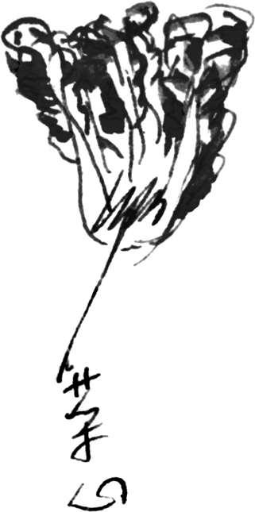
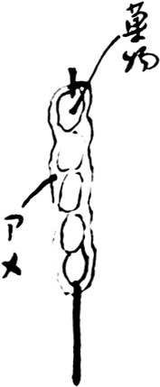
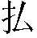

一[46]
a.“阿呀，这是什么话呵！八一嫂，我自己看来倒还是一个人，会说出这样昏诞胡涂话么？……”
问：“我自己看来倒还是一个人”，是“自己一个人，敌人（即喧哗者）很多”之意吗？“会说出这样昏诞胡涂话么”，是谁说？八一嫂吗？
答：不对。意为：依我自己看，我是一个人啊，竟会说出这样蠢话么？（即八一嫂说的，并非自己所说，为什么呢，因那种话（即赞成断发）不像人话，而自己却是人。）
【私自分から見れば一りの人間であるぞ、こんな馬鹿なことを唝ふはづ（筈）があるか？
（詰り八一嫂の唝ふたことは自分の唝ふことでないと唝ふ意味。なぜかと云ふとあんな言葉（即ち、鹖朆を钖成すること）は人間の言葉らしくない、併し自分は人間であるから。）】
b.……在菜汤的热气里……早先看中了的一个菜心去。
问：“菜汤”是蔬菜汤吗？
答：白菜汤，在中国（南方）几乎是主菜，盛在大碗里，放于桌子中央，这时菜叶切成约一寸长短，而菜心仍是菜心，一望就知，因其味好，小孩抢着吃。
【キャべツの汁は、支那（南部）では、ほとんど、主食である。大きい皿に入れて食卓の穞中におく、そのとき、葉は長さ一寸ほと切鹖せれて居たけれども、心は矢張り心で一目でわかる。味がよいから子供があらそつてたべる。】

（增田画）
问：“菜心”是菜（植物）之心吗？
答：对。
问：“菜心”的“菜”是小菜的意思吗？
答：不对。
c.冰糖葫芦

问：是冰淇淋么？
答：不是。将果物（山楂、葡萄等）插在竹棒上，外面裹上糖衣的东西。
【果物（山查子、葡萄など）を竹の棒にさしてそとにあめ（飴）をかけたもの】
二
《小品文的危机》[47]
客栈里有一间长包的房子，……烟榻……
问：“长包的房子”是什么？
答：“长包的房子”，不是每个月决定租金多少，而是一年交付若干房租。因长期居住，故房租比较便宜。“客栈”，可译作“下宿”。
【每月いくらときめるものでなく、一ク年何程ときめて

ふ。ながく居るものですから、割合に屋賃がやすい】问：“烟榻”是雅片之榻？
答：不是。
瘾足心闲，摩挲鉴赏。
问：“瘾足”是鸦片病吗？
答：是。
问：“摩挲”是什么意思？
答：仔细抚摸，反复抚摸。
【くわしく、なでる；ぐるぐるとなでる】
正是一榻胡涂的泥塘里的……
问：“一榻胡涂”，常见此词，意思却不明白。
答：乱七八糟或无法形容。其实只是“严重”的意思。“泥塘”=泥泞的水坑。
【滅茶苦茶or言様の無い。宓は只「大変」の意味。
泥塘=泥濘のたまり】
想在战地或灾区里的人们来鉴赏罢
问：“想在”？
答：如果想（希望）在战地或灾区中的人们来鉴赏的话……
【=戬地或は灾區の中に在る人々が瘄て鑑賞すると思ふ（=希望する）なら——】
遍满小报的摊子上……
问：“小报的摊子”？
答：“摊子”=在宽的人行道上铺纸卖东西，比日本的“露店”小，日本庙会时也有。
“小报”=刊载社会事件和无聊文章、滑稽等的报纸。有日刊，也有周刊。这种东西日本似乎没有。一般每回一小张，故叫“小报”。
【攤子=ひろい人行道上に紙をひいて、品物をつて居るもの、露店より小さい。日本の緣日のときにもある。
小報=社仝上の出瘄こととつまらない文章、滑などをのせる新聞、日刊あり、週刊もあり。そんなものは日本にはない様です。大抵每回小型一枚だろう、「小報」とよばれる。】
已经不能在弄堂里拉扯她的生意
问：“弄堂”？
答：即日语的“横町”。
问：“拉扯”？
答：即日语“引っぱる”。“生意”=买卖（此处意为“卖方”）。
【生意=商（ここでは、手の意になる）】
[3] 本节所答的问题，见于第十一篇《宋之志怪及其传奇文》。
[4] 此处原有关于“御车女”的解答，参看331113致增田涉信附件。
[9] 本节所答的问题，见于第十四篇《元明传来之讲史（上）》。
[10] 本节所答的问题，见于第十五篇《元明传来之讲史（下）》。
[11] 本节所答的问题，见于第十六篇《明之神魔小说（上）》。
[12] 本节所答的问题，见于第十七篇《明之神魔小说（中）》。
[15] 本节所答的问题，见于第十八篇《明之神魔小说（下）》）。
[16] 本节所答的问题，见于第十九篇《明之人情小说（上）》。
[19] 河间妇 唐代柳宗元《河间传》：“河间，淫妇也。不欲言其姓，故以邑称。”河间今属河北。
[20] 本节所答的问题，见于第二十篇《明之人情小说（下）》。
[21] 本节所答的问题，见于第二十一篇《明之拟宋市人小说及后来选本》。
[22] 本节所答的问题，见于第二十二篇《清之拟晋唐小说及其选本》。
[24] 女作家庐隐（1898—1934）曾在1923年6月1日至9月11日的《晨报》副刊《文学旬刊》第3至11号上发表她写的《中国小说史略》。
[27] 本节所答的问题，见于第二十五篇《清之以小说见才学者》。
[29] 本节所答问题，见于第二十七篇《清之侠义小说及公案》。
[30] 本节所答的问题，见于第二十八篇《清末之谴责小说》。
[32] 见于唐代柳宗元《柳河东集·河间传》，参看第十一节注〔4〕。
[41] 此处原有关于“亲是交门”二句的解答，见321219致增田涉信附件。
[42] 三桠 名结香、黄瑞香，落叶灌木。原产于中国。茎皮纤维为造纸原料。因枝常三歧，故日本称三桠。
[44] 这是节选《儒林外史》第十四回和第十五回所写马纯上游西湖遇假神仙的故事片断。
 ” 原作为“烫”。
” 原作为“烫”。[46] 本节所答的三个问题，分别见于《风波》、《肥皂》和《我的失恋》。
[47] 增田涉在提问件中有如下附言：“《文学月报》约我翻译《小品文的危机》，以下几条请最快地赐教（您极忙，但请尽量快一点，因稿件至七月十二、三日截止）。 六月二十九日。”
注 释
[46] 本节所答的三个问题，分别见于《风波》、《肥皂》和《我的失恋》。
[47] 增田涉在提问件中有如下附言：“《文学月报》约我翻译《小品文的危机》，以下几条请最快地赐教（您极忙，但请尽量快一点，因稿件至七月十二、三日截止）。 六月二十九日。”